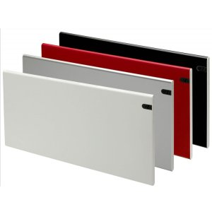
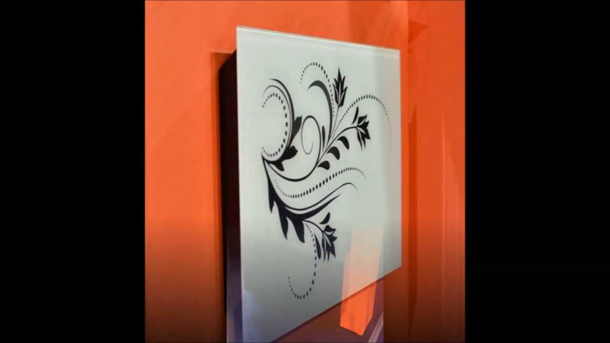
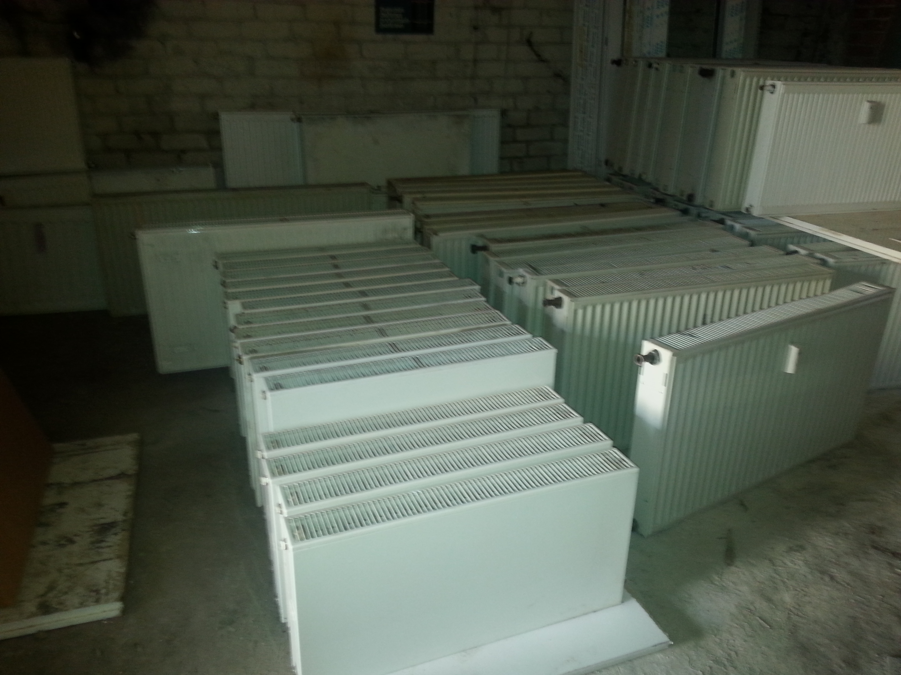

Radiatoriai | Šildymo radiatoriai pigiau | Vilpra.lt: Šiluma Jūsų namams
2020.10.29 11:16
Kontaktai Informacija apie mus Informacija pirkėjui Prekių paieška 0 Įsimintinos prekės 0 Pirkinių krepšelis Skambinkite 8 5 230 5650 Akcijos/išpardavimai Saulės elektrinės Grįžti Saulės moduliai Fotovoltiniai keitikliai Fotovoltiniai kabeliai ir jungtys Šildymo įranga Grįžti Katilai Kieto kuro katilai Granuliniai katilai Dujiniai katilai Skysto kuro katilai Elektriniai katilai Atsarginės dalys Komplektuojančios ir kitos dalys Vandens šildytuvai Elektriniai vandens šildytuvai Kombinuoti vandens šildytuvai Greitaeigiai vandens šildytuvai Akumuliacinės talpos Atsarginės dalys Radiatoriai Plieniniai radiatoriai Aliumininiai radiatoriai Ketiniai radiatoriai Komplektuojančios ir kitos dalys Kolektoriai Radiatoriniai kolektoriai Grindiniai kolektoriai Kolektorinės spintelės Konvektoriai Įleidžiami natūralios konvekcijos konvektoriai Įleidžiami su ventiliatoriumi konvektoriai Pastatomi konvektoriai Konvektorių grotelės Elektriniai konvektoriai | Elektriniai kilimėliai | Šildymo kilimėliai Katilinės įranga ir termoreguliatoriai Radiatorių termoreguliatoriai Katilinės termoreguliavimo įranga Cirkuliaciniai siurbliai Išsiplėtimo indai Armatūra, Tvirtinimai, Izoliacija Uždaromoji ir jungiamoji armatūra Vamzdžiai Lituojami PPR vamzdžiai ir jų fitingai Daugiasluoksniai PEX ir PERT vamzdžiai PVC ir PPHT vidaus nuotekų vamzdžiai Juodo metalo, cinkuoti vamzdžiai ir jų fitingai Variniai vamzdžiai PVC lauko nuotekų vamzdžiai, šuliniai PE vamzdžiai ir fitingai Daugiasluoksnių vamzdžių fitingai Chemija Suodžių sudeginimo katalizatorius Neužšąlantis skystis Hermetikai, pastos, pakulos Židiniai ir krosnelės Grįžti Židiniai Ketiniai židiniai Plieniniai židiniai Išskirtinio dizaino židiniai Elektriniai ir bio židiniai Dujiniai židiniai Krosnelės Ketinės krosnelės Plieninės krosnelės Akumuliacinės krosnelės Lauko židiniai, kepsninės, griliai Židinių izoliacija Židinio įrankiai ir aksesuarai Židinių grotelės, oro paskirstymo įranga Komplektuojančios dalys Dūmtraukiai ir kaminai Grįžti Dūmtraukiai židiniams ir krosnelėms Apvalūs įdėklai į kaminus Diametras 130 mm Diametras 150 mm Diametras 160 mm Diametras 180 mm Diametras 200 mm Ovalūs įdėklai į kaminus Dvisieniai pristatomi dūmtraukiai Tvirtinimo ir sandarinimo detalės Trisienės dūmtraukių sistemos Dūmtraukiai pirtims Diametras 115 mm Diametras 130 mm Vonia ir virtuvė Grįžti Keramika Praustuvai Unitazai Bidė Pisuarai Specialūs gaminiai Unitazo dangčiai Atsarginės dalys Vonios Akrilinės vonios Plieninės vonios Ketinės vonios Akmens masės Priedai vonioms Vonios baldai Vonios spintelės Praustuvų spintelės Vonios veidrodžiai Priedai vonios baldams Dušo kabinos Dušo padėklai Dušo durelės ir sienelės Pusapvalės dušo kabinos Kvadratinės dušo kabinos Dušo sienelės voniai Priedai dušo kabinoms Maišytuvai Vonios maišytuvai Dušo maišytuvai Dušo sistemos Praustuvo maišytuvai Bidė maišytuvai Plautuvės maišytuvai Vožtuvai, dozatoriai, čiaupai Atsarginės dalys maišytuvams Priedai maišytuvams Potinkinės sistemos Potinkinės sistemos unitazams Potinkinės sistemos bidė Potinkinės sistemos maišytuvams Kiti moduliai, priedai, atsarginės dalys Gyvatukai voniai Juodo metalo gyvatukai Dizaino radiatoriai Nerūdijančio plieno gyvatukai Variniai gyvatukai Elektriniai gyvatukai Tenai gyvatukams Komplektuojančios gyvatukų dalys Sifonai, trapai ir latakai Sifonai Latakai Vonios kambario aksesuarai Aksesuarai Muilinės Porankiai ir ranktūriai Stiklinės ir stiklinaitės voniai WC popieriaus laikikliai WC šepečiai Vonios kabliukai Rankšluosčių laikikliai Virtuvės įranga Plieninės plautuvės Granitinės plautuvės Vėdinimas ir kondicionavimas Grįžti Oro kondicionieriai Buitiniai oro kondicionieriai Šilumos siurbliai oras-oras Vėdinimo įranga | Vėdinimo sistemos Rekuperatoriai Ortakiai ir vėdinimo medžiagos Kondicionierių montavimo medžiagos Valdikliai ir automatika Šilumos siurbliai Grįžti Šilumos siurbliai Šilumos siurbliai žemė/vanduo Šilumos siurbliai oras/vanduo Komplektuojančios ir kitos dalys Praktiniai patarimai Kontaktai NAUJIENA Saulės elektrinės Informacija apie saulės elektrines Saulės moduliai Fotovoltiniai keitikliai Fotovoltiniai kabeliai ir jungtys Šildymo įranga Katilai Kieto kuro katilai Granuliniai katilai Dujiniai katilai Skysto kuro katilai Elektriniai katilai Atsarginės dalys Komplektuojančios ir kitos dalys Vandens šildytuvai Elektriniai vandens šildytuvai Kombinuoti vandens šildytuvai Greitaeigiai vandens šildytuvai Akumuliacinės talpos Atsarginės dalys Radiatoriai Plieniniai radiatoriai Aliumininiai radiatoriai Ketiniai radiatoriai Komplektuojančios ir kitos dalys Kolektoriai Radiatoriniai kolektoriai Grindiniai kolektoriai Kolektorinės spintelės Konvektoriai Įleidžiami natūralios konvekcijos konvektoriai Įleidžiami su ventiliatoriumi konvektoriai Pastatomi konvektoriai Konvektorių grotelės Elektriniai konvektoriai | Elektriniai kilimėliai | Šildymo kilimėliai Katilinės įranga ir termoreguliatoriai Radiatorių termoreguliatoriai Katilinės termoreguliavimo įranga Cirkuliaciniai siurbliai Išsiplėtimo indai Armatūra, Tvirtinimai, Izoliacija Uždaromoji ir jungiamoji armatūra Vamzdžiai Lituojami PPR vamzdžiai ir jų fitingai Daugiasluoksniai PEX ir PERT vamzdžiai PVC ir PPHT vidaus nuotekų vamzdžiai Juodo metalo, cinkuoti vamzdžiai ir jų fitingai Variniai vamzdžiai PVC lauko nuotekų vamzdžiai, šuliniai PE vamzdžiai ir fitingai Daugiasluoksnių vamzdžių fitingai Chemija Suodžių sudeginimo katalizatorius Neužšąlantis skystis Hermetikai, pastos, pakulos Židiniai ir krosnelės Židiniai Ketiniai židiniai Plieniniai židiniai Išskirtinio dizaino židiniai Elektriniai ir bio židiniai Dujiniai židiniai Krosnelės Ketinės krosnelės Plieninės krosnelės Akumuliacinės krosnelės Lauko židiniai, kepsninės, griliai Židinių izoliacija Židinio įrankiai ir aksesuarai Židinių grotelės, oro paskirstymo įranga Komplektuojančios dalys Dūmtraukiai ir kaminai Dūmtraukiai židiniams ir krosnelėms Apvalūs įdėklai į kaminus Diametras 130 mm Diametras 150 mm Diametras 160 mm Diametras 180 mm Diametras 200 mm Ovalūs įdėklai į kaminus Dvisieniai pristatomi dūmtraukiai Tvirtinimo ir sandarinimo detalės Trisienės dūmtraukių sistemos Dūmtraukiai pirtims Diametras 115 mm Diametras 130 mm Vonia ir virtuvė Keramika Praustuvai Unitazai Bidė Pisuarai Specialūs gaminiai Unitazo dangčiai Atsarginės dalys Vonios Akrilinės vonios Plieninės vonios Ketinės vonios Akmens masės Priedai vonioms Vonios baldai Vonios spintelės Praustuvų spintelės Vonios veidrodžiai Priedai vonios baldams Dušo kabinos Dušo padėklai Dušo durelės ir sienelės Pusapvalės dušo kabinos Kvadratinės dušo kabinos Dušo sienelės voniai Priedai dušo kabinoms Maišytuvai Vonios maišytuvai Dušo maišytuvai Dušo sistemos Praustuvo maišytuvai Bidė maišytuvai Plautuvės maišytuvai Vožtuvai, dozatoriai, čiaupai Atsarginės dalys maišytuvams Priedai maišytuvams Potinkinės sistemos Potinkinės sistemos unitazams Potinkinės sistemos bidė Potinkinės sistemos maišytuvams Kiti moduliai, priedai, atsarginės dalys Gyvatukai voniai Juodo metalo gyvatukai Dizaino radiatoriai Nerūdijančio plieno gyvatukai Variniai gyvatukai Elektriniai gyvatukai Tenai gyvatukams Komplektuojančios gyvatukų dalys Sifonai, trapai ir latakai Sifonai Latakai Vonios kambario aksesuarai Aksesuarai Muilinės Porankiai ir ranktūriai Stiklinės ir stiklinaitės voniai WC popieriaus laikikliai WC šepečiai Vonios kabliukai Rankšluosčių laikikliai Virtuvės įranga Plieninės plautuvės Granitinės plautuvės Vėdinimas ir kondicionavimas Oro kondicionieriai Buitiniai oro kondicionieriai Šilumos siurbliai oras-oras Vėdinimo įranga | Vėdinimo sistemos Rekuperatoriai Ortakiai ir vėdinimo medžiagos Kondicionierių montavimo medžiagos Valdikliai ir automatika Šilumos siurbliai Šilumos siurbliai Šilumos siurbliai žemė/vanduo Šilumos siurbliai oras/vanduo Komplektuojančios ir kitos dalys Akcijos/išpardavimai Prekių katalogas Akcijos/išpardavimai Patarimai/naujienos Partnerių zona Titulinis Šildymo įranga Radiatoriai Radiatoriai Rodoma: 259 Filtrai Subkategorijos Plieniniai radiatoriai Aliumininiai radiatoriai Ketiniai radiatoriai Komplektuojančios ir kitos dalys
Centrinio šildymo radiatoriai patalpų šildymui gali būti plieniniai, ketiniai ar aliuminiai. Plieniniai radiatoriai atrodo moderniai ir tvarkingai, jų būna įvairių dydžių, galių bei prijungimo tipų, jie pritaikomi kone kiekvienam būstui ir įvairaus dydžio patalpoms. Aliuminio radiatoriai greitai įšyla ir atiduoda šilumą aplinkai, o ketiniai radiatoriai yra ilgaamžiai, ilgai skleidžia šilumą į patalpą.
Rodyti daugiau Rodyti mažiauRadiatoriai
Rodoma: 259 Rūšiuoti pagal Populiariausios Naujausios Seniausios Pagal kainą nuo aukščiausios Pagal kainą nuo žemiausios Pasirinkti filtrai: Išvalyti filtrusPlieninis radiatorius GALANT CENTARA 20C-5-0400, centrinis prijungimas
52,30 € 74,70 € -30% Į krepšelį Įsiminti PalygintiPlieninis radiatorius GALANT CENTARA 20C-5-0500, centrinis prijungimas
54,53 € 77,90 € -30% Į krepšelį Įsiminti PalygintiPlieninis radiatorius GALANT CENTARA 20C-5-0600, centrinis prijungimas
59,29 € 84,70 € -30% Į krepšelį Įsiminti PalygintiPlieninis radiatorius GALANT CENTARA 20C-6-0400, centrinis prijungimas
55,02 € 78,59 € -30% Į krepšelį Įsiminti PalygintiPlieninis radiatorius GALANT CENTARA 20C-6-0500, centrinis prijungimas
57,12 € 81,59 € -30% Į krepšelį Įsiminti PalygintiPlieninis radiatorius GALANT CENTARA 20C-6-0600, centrinis prijungimas
62,16 € 88,80 € -30% Į krepšelį Įsiminti PalygintiPlieninis radiatorius GALANT CENTARA 20C-6-0800, centrinis prijungimas
70,63 € 100,90 € -30% Į krepšelį Įsiminti PalygintiPlieninis radiatorius GALANT CENTARA 20C-6-1000, centrinis prijungimas
79,45 € 113,50 € -30% Į krepšelį Įsiminti PalygintiPlieninis radiatorius GALANT CENTARA 20C-6-1200, centrinis prijungimas
88,62 € 126,60 € -30% Į krepšelį Įsiminti PalygintiPlieninis radiatorius GALANT CENTARA 20C-9-0400, centrinis prijungimas
63,00 € 90,00 € -30% Į krepšelį Įsiminti PalygintiPlieninis radiatorius GALANT CENTARA 20C-9-0600, centrinis prijungimas
75,25 € 107,50 € -30% Į krepšelį Įsiminti PalygintiRenovacinis plieninis radiatorius HM 20C-AT-55-0600, prijungimas universalus
37,07 € 59,80 € -38% Į krepšelį Įsiminti PalygintiRenovacinis plieninis radiatorius HM 20C-AT-55-0800, prijungimas universalus
57,60 € 92,90 € -38% Į krepšelį Įsiminti PalygintiPlieninis radiatorius GALANT UNI 20UNI-5-0400, universalus prijungimas
48,51 € 69,30 € -30% Į krepšelį Įsiminti PalygintiPlieninis radiatorius GALANT UNI 20UNI-5-0500, universalus prijungimas
50,54 € 72,20 € -30% Į krepšelį Įsiminti PalygintiPlieninis radiatorius GALANT UNI 20UNI-5-0600, universalus prijungimas
55,02 € 78,59 € -30% Į krepšelį Įsiminti PalygintiPlieninis radiatorius GALANT UNI 20UNI-5-0700, universalus prijungimas
57,33 € 81,90 € -30% Į krepšelį Įsiminti PalygintiPlieninis radiatorius GALANT UNI 20UNI-5-0800, universalus prijungimas
62,30 € 89,00 € -30% Į krepšelį Įsiminti Palyginti Rodyti daugiau Įrengiant būstą ar kitas įvairios paskirties patalpas, svarbu pasirūpinti šildymu, kuris būtų kokybiškas ir leistų sutaupyti. Siekiant efektyvaus šildymo su optimaliomis sąnaudomis, pravers įvairių rūšių radiatoriai, kuriuos rasite mūsų įmonėje.
Tiekiame modernius bei kokybiškus „HM Heizkorper“, „Decoral“, „Viadrus“ radiatorius už prieinamą kainą. Kataloge atrasite skirtingų tipų aliumininių, ketinių ir plieninių radiatorių. Įrengiant radiatorius svarbu, kad jie atitiktų Jūsų patalpos išmatavimus, todėl galite pasirinkti iš skirtingų dydžių. Galingumas – taip pat svarbus rodiklis, didele dalimi lemiantis šildymo sąnaudas atitinkamo dydžio patalpai, todėl pas mus rasite skirtingo galingumo radiatorių. Jeigu nežinote, ką išsirinkti, patyrę meistrai atvyks į Jūsų nurodytą vietą, įvertins padėtį ir parinks pačius geriausius sprendimus. Teikiame išsamias konsultacijas visiems savo klientams.
Jei Jūsų dominančios prekės likutis UAB Vilpra salonuose ir sandeliuose nepakankamas (x),
Tai galite užduoti klausimus el. pašto adresu: einfo@vilpra.lt , arba skambinti telefonu 8-5-2760325 dėl prekės užsakymo organizavimo.
Suteiksime visokeriopą informaciją ir pagalbą!
Uždaryti Išvalyti Palyginti 0/3 Peržiūrėti Išvalyti Kitos grupės įmonės Naudinga informacija Prekių kategorijos Šildymo įranga Atsinaujinančios energijos įranga Kondicionavimo ir vėdinimo įranga Židiniai, krosnelės ir pirtys Vonios kambario įranga Dūmtraukiai ir kaminai Saulės elektrinės. Fotovoltinė įranga Svetainės informacija Kontaktai Informacija pirkėjui Prekių pristatymas Administracija Apie įmonę Misija, vizija, vertybės Karjera Informacija apie mus Įmonės rekvizitai Užsisakyti naujienlaiškį © 2002 -2020 UAB Vilpra. Visos teisės saugomos. info@vilpra.lt Sprendimas: zet.lt- Radiatoriai gera kaina internetu | pigu.lt
- Radiatoriai ir jų dalys | Šildymo prietaisai | Senukai.lt
- Kermi radiatoriai. Akcija!
- Radiatoriai
- Galingumų lentelė | Radiatoriai
- Radiatoriai Internetu pigiau Žema kaina | b-a.eu
- Aliumininiai radiatoriai | Vilpra.lt: Šiluma Jūsų namams
- Radiatoriai - Jaukurai
- Radiatoriai - Radiatoriai | SILTAS.LT
- Radiatoriai internetu | namams24.lt
- Radiatoriai gera kaina internetu | pigu.lt
Radiatoriai yra gaminami keletos rūšių ir galingumų Daugiau Kodėl mes? Mūsų gamybos linija suvartoja daug mažiau elektros energijos, o dažymo ir lakavimo linijoje “Eco Line” nenaudojami tokie organiniai junginiai kaip fosfatai, toksiški sunkieji metalai.
- Radiatoriai ir jų dalys | Šildymo prietaisai | Senukai.lt
Adresas: Savanorių pr. 191 a, LT-02300, Vilnius Telefono nr.: +370 5 232 2498 Darbo laikas: (I - V) 7.30 - 16.30 val.
- Kermi radiatoriai. Akcija!
Radiatoriai yra itin svarbus prietaisas namuose, užtikrinantis šiltą patalpos temperatūrą net ir šalčiausiu metu laiku. Būtent todėl radiatoriai, kuriuos parduodame, pasižymi plačia įvairove – elektriniai, aliuminiai, plieniniai radiatoriai, įvairūs stiliai, spalvos, dydžiai.Nors į gerus radiatorius verta investuoti, mes vis tiek siūlome puikų kainos ir kokybės santykį.
- Radiatoriai
Kermi radiatoriai tai populiariausia šildymo įranga, tiek naujose statybose, tiek renovuojamuose objektuose. Moderni radiatorių gamybos technologija, nedidelė vandens talpa, harmoningas konvekcijos ir spinduliavimo būdu atiduodamas šilumos srautas užtikrina didelę radiatoriaus šilumos galią.
- Galingumų lentelė | Radiatoriai
Radiatoriai skirstomi į du pagrindinius tipus: plokštinius radiatorius (plienininiai) ir sekcijinius (iš ketaus ar aliuminio, arba kombinuoti). Lyginant skirtingų radiatorių savybes, išsiskiria ketiniai – juose yra didesnis vandens tūris, todėl jie yra labai inertiški, tačiau labai patvarūs ir ilgaamžiai.
- Radiatoriai Internetu pigiau Žema kaina | b-a.eu
Plieniniai radiatoriai internetu gera kaina.Internetinėje parduotuvėje b-a.eu rasite virš 700 įvairaus modelio plieninių radiatorių. Naujausi pasiūlymai geriausiomis kainomis. Vyksta dažnos akcijos., kaina internetu pigiau.
- Aliumininiai radiatoriai | Vilpra.lt: Šiluma Jūsų namams
Praktiški aliumininiai radiatoriai namams ir kitoms patalpoms šildyti. Skirtingo pločio ir matmenų plieniniai radiatoriai. Žinomi gamintojai, plati pasiūla, geros kainos, taikomos nuolaidos ir akcijos.
- Radiatoriai - Jaukurai
Plieniniai radiatoriai pasižymi greitu ir patogiu montavimu – radiatoriai tvirtinami universaliais laikikliais ir gali būti apsukami, todėl paprasta montuoti toje pusėje, kurioje yra vandens įvadas. Gamintojai HM Heizkorper ir Borpan užtikrinina aukštą plieninių radiatorių kokybę.
- Radiatoriai - Radiatoriai | SILTAS.LT
Centrinio šildymo radiatoriai gera kaina pigu.lt! Apačioje pajungiami, šone pajungiami radiatoriai internetu pigiau. Kermi, Purmo ir kiti prekiniai ženklai.
- Radiatoriai internetu | namams24.lt
Radiatoriai namuose daugiausia dėmesio sulaukia prasidėjus šildymo sezonui, kai nuo jų sklinda maloni šiluma, suteikdama ne tik šilumos, bet ir jaukimo namams. Šiuolaikiniai radiatoriai net tampa tam tikru interjero akcentu. Radiatoriaus pasirinkimas - nelengvas procesas, nes lemia ne tik šildymo efektyvumą, bet ir vizualinį patalpos vaizdą.
Radiatoriai yra gaminami keletos rūšių ir galingumų Daugiau Kodėl mes? Mūsų gamybos linija suvartoja daug mažiau elektros energijos, o dažymo ir lakavimo linijoje “Eco Line” nenaudojami tokie organiniai junginiai kaip fosfatai, toksiški sunkieji metalai.
Adresas: Savanorių pr. 191 a, LT-02300, Vilnius Telefono nr.: +370 5 232 2498 Darbo laikas: (I - V) 7.30 - 16.30 val.
Radiatoriai yra itin svarbus prietaisas namuose, užtikrinantis šiltą patalpos temperatūrą net ir šalčiausiu metu laiku. Būtent todėl radiatoriai, kuriuos parduodame, pasižymi plačia įvairove – elektriniai, aliuminiai, plieniniai radiatoriai, įvairūs stiliai, spalvos, dydžiai.Nors į gerus radiatorius verta investuoti, mes vis tiek siūlome puikų kainos ir kokybės santykį.
Kermi radiatoriai tai populiariausia šildymo įranga, tiek naujose statybose, tiek renovuojamuose objektuose. Moderni radiatorių gamybos technologija, nedidelė vandens talpa, harmoningas konvekcijos ir spinduliavimo būdu atiduodamas šilumos srautas užtikrina didelę radiatoriaus šilumos galią.
Radiatoriai skirstomi į du pagrindinius tipus: plokštinius radiatorius (plienininiai) ir sekcijinius (iš ketaus ar aliuminio, arba kombinuoti). Lyginant skirtingų radiatorių savybes, išsiskiria ketiniai – juose yra didesnis vandens tūris, todėl jie yra labai inertiški, tačiau labai patvarūs ir ilgaamžiai.
Plieniniai radiatoriai internetu gera kaina.Internetinėje parduotuvėje b-a.eu rasite virš 700 įvairaus modelio plieninių radiatorių. Naujausi pasiūlymai geriausiomis kainomis. Vyksta dažnos akcijos., kaina internetu pigiau.
Praktiški aliumininiai radiatoriai namams ir kitoms patalpoms šildyti. Skirtingo pločio ir matmenų plieniniai radiatoriai. Žinomi gamintojai, plati pasiūla, geros kainos, taikomos nuolaidos ir akcijos.
Plieniniai radiatoriai pasižymi greitu ir patogiu montavimu – radiatoriai tvirtinami universaliais laikikliais ir gali būti apsukami, todėl paprasta montuoti toje pusėje, kurioje yra vandens įvadas. Gamintojai HM Heizkorper ir Borpan užtikrinina aukštą plieninių radiatorių kokybę.
Centrinio šildymo radiatoriai gera kaina pigu.lt! Apačioje pajungiami, šone pajungiami radiatoriai internetu pigiau. Kermi, Purmo ir kiti prekiniai ženklai.
Radiatoriai namuose daugiausia dėmesio sulaukia prasidėjus šildymo sezonui, kai nuo jų sklinda maloni šiluma, suteikdama ne tik šilumos, bet ir jaukimo namams. Šiuolaikiniai radiatoriai net tampa tam tikru interjero akcentu. Radiatoriaus pasirinkimas - nelengvas procesas, nes lemia ne tik šildymo efektyvumą, bet ir vizualinį patalpos vaizdą.
  